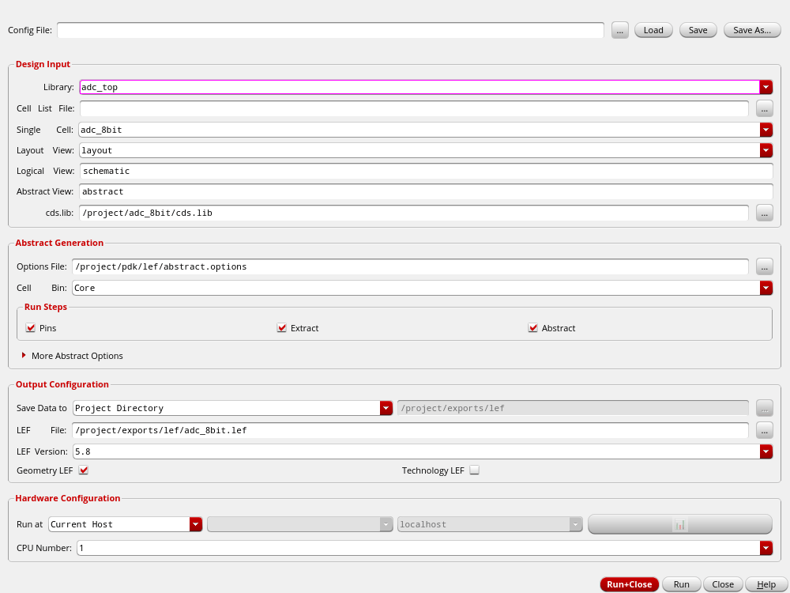
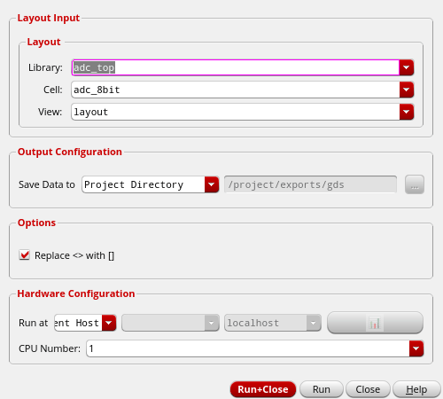
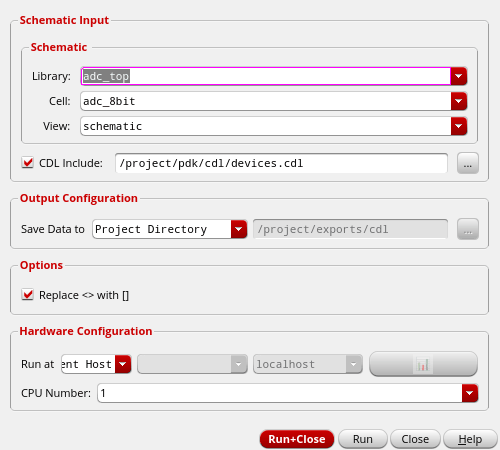
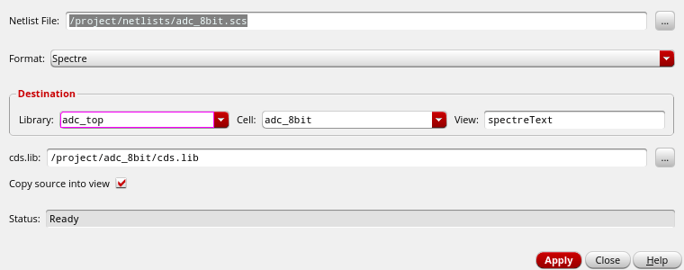
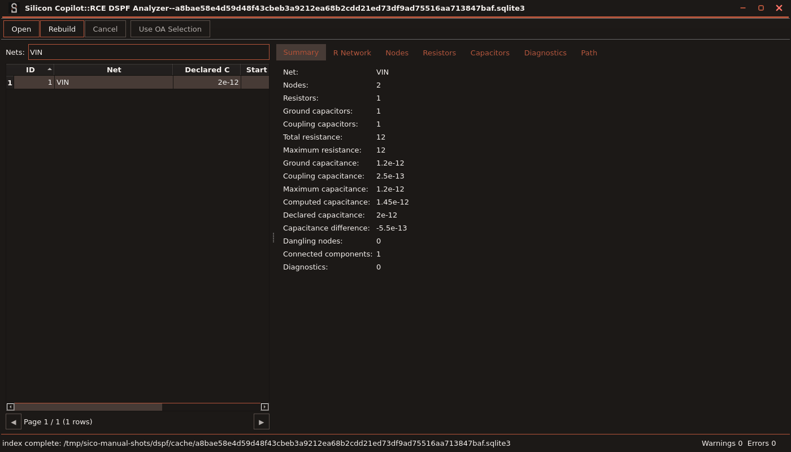

CAD FLOW / EXPORT & UTILITIES
LEF、数据导出与网表导入
通过 SiCo 菜单完成常用 OA 数据交接。各工具共用安装与工程环境，但使用各自的输出目录和配置文件。
LEF Generator
在 SiCo → LEF Generator 中选择 layout library / cell / view，或使用 batch cell-list。Abstract options 包含 PDK 的 pin、extract、blockage 与 site 规则，应由工艺或 CAD 提供。


| 页面/控件 | 详细说明 | 使用要点 |
|---|---|---|
| Config File + Load / Save / Save As… | 管理 LEF Profile。 | 载入后重新核对 design、options 和输出文件。 |
| Design Input → Library / Layout View | 单 cell 的 OA 库、cell 与 layout view。 | 库必须能从当前 cds.lib 解析；view 默认 layout。 |
| Cell List File / Single Cell | 批处理列表或单个 cell 名称。 | 两者不能混为同一个输入；批处理文件内容会决定实际 cell 集合。 |
| Logical View / Abstract View | 逻辑 view（默认 schematic）与 abstract view 名称。 | 只有工艺/工具确实使用这些 view 时才修改默认值。 |
| cds.lib | 输入库映射文件。 | 使用目标工程的 cds.lib，不要指向另一个 PDK 的库。 |
| Options File | Abstract Generator options 文件。 | 由 PDK/CAD 提供；不要用任意文本文件代替。 |
| Cell Bin | Core、Block、IO、Corner。 | 分类影响 abstract 生成规则；默认 Core。 |
| Run Steps | Pins、Extract、Abstract 三步开关。 | 只跑需要的步骤；关闭前置步骤却要求后续步骤时，先确认已有中间数据。 |
| More Abstract Options | 展开 Pins / Extract / Abstract 三组选项，包括 pin 文本映射、电源/地名称、边界与层、extract 层/层数、blockage、site 与 fracture 等。 | 默认 From Options File 表示继承 options 文件；只覆盖已经确认的字段。 |
| Save Data to | Project / Current / Customize Directory。 | 示例输出结构为 $LEF_DB_DIR/<lib>.<cell>.<view>/<cell>.lef。 |
| LEF File / LEF Version | 最终 LEF 路径与版本。 | 版本必须被下游布局工具接受；不要用输出路径替代 Profile。 |
| Geometry LEF / Technology LEF | 分别生成 cell geometry 与 technology 数据。 | 按交付需求选择；Technology LEF 通常只需由工艺/CAD 统一发布。 |
| Run at / Queue / Host / LSF / CPU Number | 选择本机或 LSF 执行并设置 CPU。 | 核对队列、主机与资源后再 Run。 |
| Run+Close / Run / Close | 运行后关闭、运行保留、只关闭。 | LEF 表单没有独立 Report 按钮；结果从 LEF File 与运行目录查看。 |
export LEF_DB_DIR="$PROJECT_ROOT/exports/lef"
export LEFGEN_OPT_FILE="$PDK_ROOT/lef/abstract.options"
export LEF_DEFAULT_BIN="Core"
# 批处理时设置；单 cell 可以不设。
export LEF_CELL_LIST="$PROJECT_ROOT/config/lef-cells.list"
# 可选：预填已保存的 GUI Profile。
export LEF_CONFIG="$PROJECT_ROOT/config/lef-profile.toml"
export LEF_ABSTRACT="abstract"分类可选 Core、Block、IO、Corner，默认 Core。选择输出根与运行主机后 Run，通常输出到 $LEF_DB_DIR/<lib>.<cell>.<view>/<cell>.lef。LEF Profile 与其他 flow 一样通过 Save / Load 管理。
lefgen generate /path/to/run/lef.toml
lefgen run /path/to/run/lef.tomlStream GDS 与 Export CDL




| 页面/控件 | 详细说明 | 使用要点 |
|---|---|---|
| Layout Input（Stream GDS） | OA library / cell / layout view。 | 需要 CDS_LIB、TECH_LAYER_MAP 和 PATH 中的 strmout。 |
| Schematic Input（Export CDL） | OA library / cell / schematic view。 | 需要 CDS_LIB 和 PATH 中的 si；器件定义按需通过 CDL Include 提供。 |
| CDL Include | 启用并选择 CDL header/include 文件。 | 非空 CDL_HEADER_FILE 会作为初值；文件必须匹配目标 PDK。 |
| Save Data to + 路径 | 选择项目、当前或自定义输出根。 | Project Directory 分别来自 GDS_DB_DIR / CDL_DB_DIR；未设置时使用当前目录。 |
| Options → Replace <> with [] | 把总线位名从尖括号转换为方括号。 | 按下游工具/网表约定选择；转换发生在导出内容中，不改变源 OA。 |
| Run at / Queue / Host / LSF / CPU Number | 选择执行位置与资源。 | LSF 队列和主机必须已经验证；导出 CPU 需求通常低于 DRC/RCE。 |
| Run+Close / Run / Close | 运行后关闭、运行保留、只关闭。 | 独立导出不会复用 LVS/RCE 内部导出目录；结果写入本次运行目录。 |
| 工具 | 输入与环境 | 默认项目输出结构 |
|---|---|---|
| Stream GDS | OA layout、CDS_LIB、TECH_LAYER_MAP；PATH 中的 strmout | $GDS_DB_DIR/<lib>.<cell>/<cell>.gds |
| Export CDL | OA schematic、CDS_LIB；按需 CDL_HEADER_FILE；PATH 中的 si | $CDL_DB_DIR/<lib>.<cell>/<cell>.cdl |
菜单中选择对应工具，填入设计 library / cell / view 并检查映射或 Include，选择输出根后运行。未设置相应 DB_DIR 时使用当前目录。完整 LVS/RCE 内部导出的 CDL/GDS 存在它们自己的运行目录，不使用独立导出目录代替。
export GDS_DB_DIR="$PROJECT_ROOT/exports/gds"
export CDL_DB_DIR="$PROJECT_ROOT/exports/cdl"
# 下面传入对应阶段的完整运行 TOML。
gdsout /path/to/run/gds.toml --generate-only
gdsout /path/to/run/gds.toml
cdlout /path/to/run/cdl.toml --generate-only
cdlout /path/to/run/cdl.tomlNetlist to View
菜单 SiCo → Netlist to View… 将已有文本网表交给 Cadence cdsTextTo5x 导入目标 view。源文件、目标 OA library 与选定 cds.lib 必须已存在。


spectreText 目标 view。点击图片查看原始尺寸| 页面/控件 | 详细说明 | 使用要点 |
|---|---|---|
| Netlist File | 选择已有文本网表；选择后会尝试用文件名预填 Cell。 | 文件必须可读；文件名与实际顶层 cell 不一致时手动修正。 |
| Format | Spectre、HSPICE、SPICE、DSPF。 | 改变格式会同步默认 view 名；不支持的 PSpice 不在列表中。 |
| Destination Library / Cell / View | 目标 OA library、cell 与 view 名。 | 目标库必须已存在且当前 cds.lib 可解析；默认 view 随格式变化。 |
| cds.lib | 目标工程的库映射文件。 | GUI 会核对目标库物理位置与当前 Virtuoso 同名库一致。 |
| Copy source into view | 勾选时复制网表内容；取消勾选时使用链接/引用方式。 | 需要独立保存时勾选；原文件会移动或长期保留时不要依赖链接。 |
| Status | 显示 Ready、Importing、导入完成或错误信息。 | 运行中不要关闭窗口；需要中止时使用 Close，它会终止当前导入进程。 |
| Apply | 启动 nl2view 导入，成功后创建目标 view。 | 一次只处理一个文件/目标；批量导入需要逐个提交。 |
| Close | 关闭表单；有活动导入时先取消该导入。 | 关闭不删除已导入的 view。 |
| 格式参数 | 默认目标 view |
|---|---|
| spectre | spectreText |
| hspice | hspiceText |
| spice | spiceText |
| dspf | dspfText |
nl2view --format spectre --library my_design --cell amplifier \
--cdslib "$CDS_LIB" /path/to/amplifier.scs
nl2view --format dspf --library my_design --cell amplifier \
--cdslib "$CDS_LIB" /path/to/amplifier.dspf默认复制源网表，避免原文件移动后链接失效；表单也可显式选择 link 模式。PSpice 不在支持格式内。GUI 还会核对目标库物理位置与当前 Virtuoso 的同名库一致。
DSPF Analyzer
从 SiCo → DSPF Analyzer… 或 dspfana /path/to/file.dspf 打开寄生网表，查看网络与寄生数据。首次读取会建立索引；可通过 RCE_DSPF_CACHE_DIR 选择缓存目录，默认使用当前工程状态根下的 rce/dspf。


| 页面/控件 | 详细说明 | 使用要点 |
|---|---|---|
| Open | 选择 DSPF/SPF 文件并建立或读取索引。 | 源文件变化后需要重建；不要把索引文件当成源网表继续编辑。 |
| Rebuild | 强制重新建立当前文件的索引。 | 源文件被替换或索引损坏时使用；重建期间取消不会保留半成品。 |
| Cancel | 取消正在进行的索引。 | 取消后保留上一次可用索引，不会删除源文件。 |
| Use OA Selection | 把当前 Virtuoso OA 选中对象带入分析视图。 | 需要有效的布局上下文和 OA 桥接；未连接时保持禁用。 |
| Highlight in Layout | 在网络右键菜单中把当前网络高亮到版图。 | 仅在有 OA 上下文且已选中网络时可用；不会修改版图。 |
| Nets 过滤与列表 | 按名称筛选网络；列表显示网络及统计字段。 | 单击选中网络后，右侧 Summary、R Network、Nodes 等页会同步。 |
| Summary | 显示节点/电阻/电容数量、总电阻、最大电阻、接地/耦合电容、计算与声明电容差、悬空节点、连通分量和诊断数。 | “Loading...”表示查询仍在后台；不要用尚未完成的值做结论。 |
| R Network | 绘制选中网络的电阻网络，支持 Labels、Short <= 阈值、Check、缩放和 Fit。 | Short 阈值用于把低阻连接视为短路；改变阈值后重新执行 Check。 |
| Nodes / Resistors / Capacitors | 分页表格显示当前网络的节点、电阻和电容明细，可用 ◀ / ▶ 翻页。 | 先选中网络再看明细；分页状态与网络选择绑定。 |
| Diagnostics | 列出解析和拓扑诊断。 | 摘要中的诊断计数非零时先看这里，再判断网络结果。 |
| Path → Start node / End node / Analyze Path | 查询同一网络内两点之间的电阻路径，结果以 JSON 文本显示。 | 输入的是网络内节点名；运行中按钮和输入会锁定，完成后恢复。 |
| 状态栏 | 显示索引状态、进度和 Warnings/Errors 计数。 | Warnings 不一定阻断分析；Errors 需要先解决索引或文件格式问题。 |
rce dspf-index /path/to/amplifier.dspf --json
rce dspf-info /path/to/amplifier.dspf --json